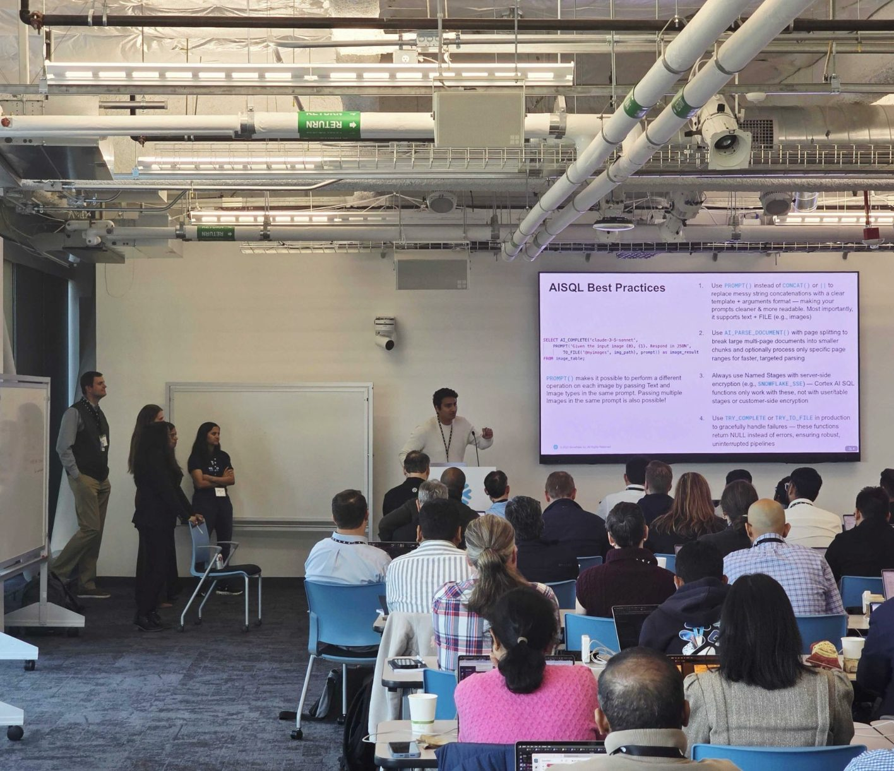
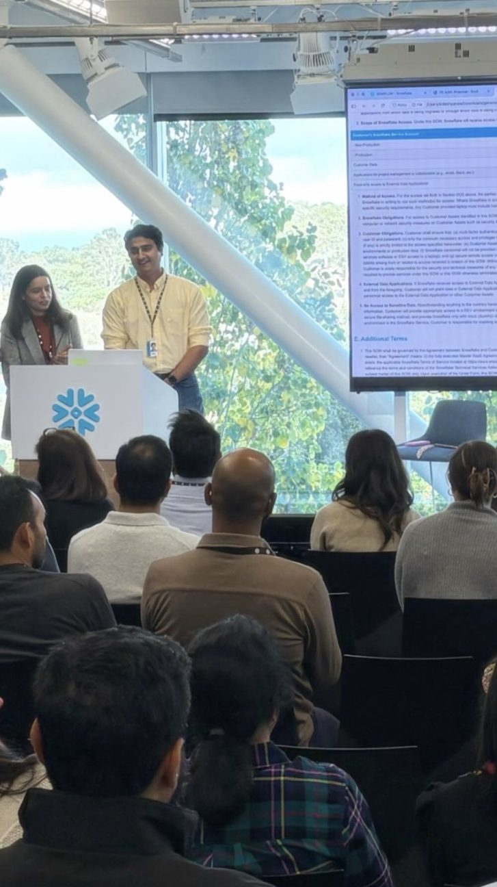
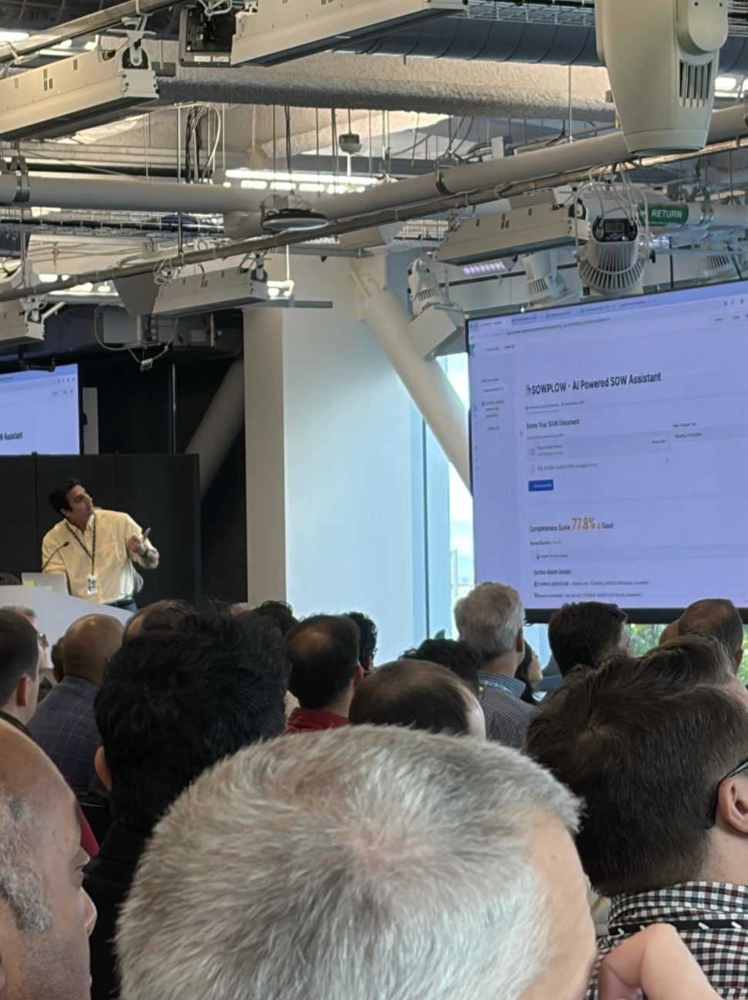
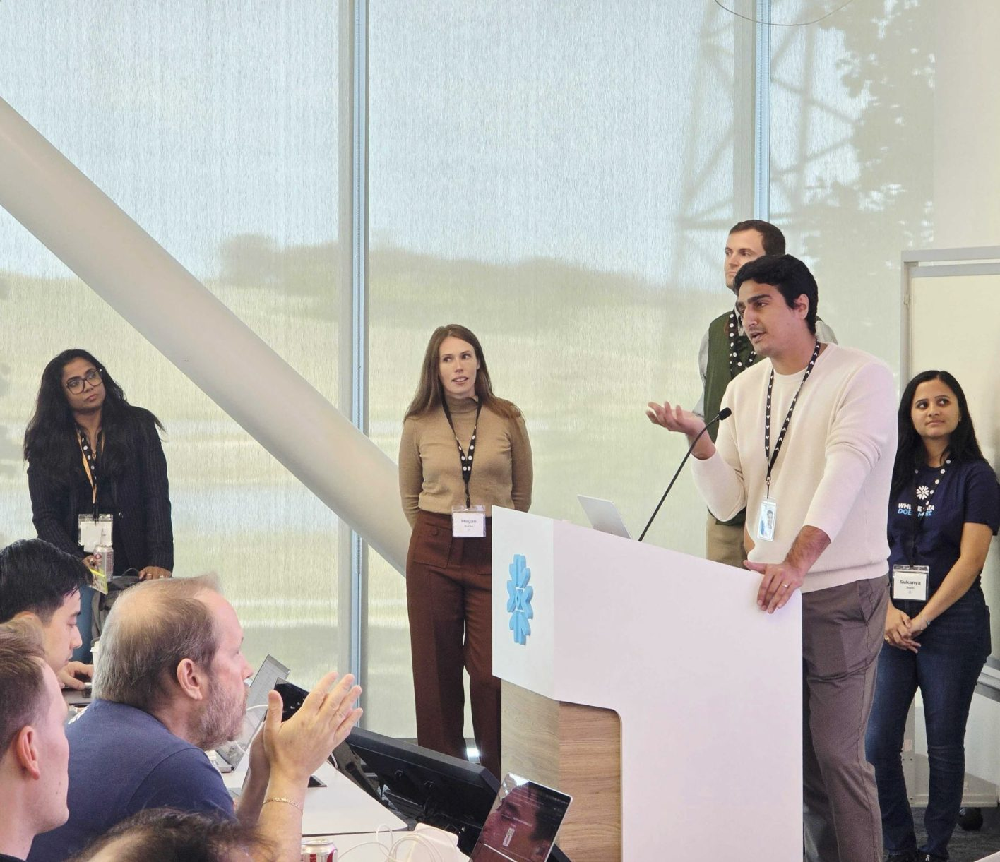
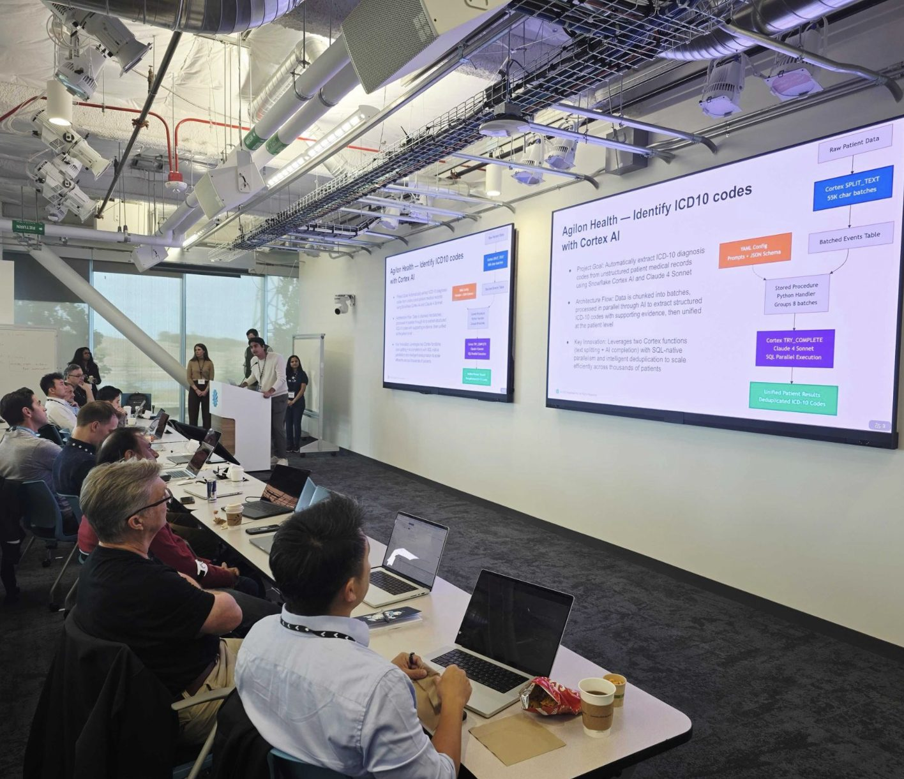
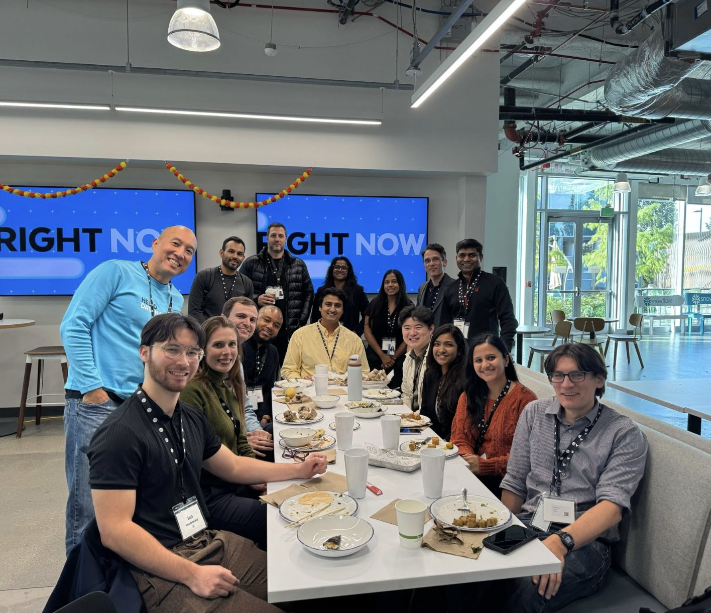

Snowflake PS Tech Summit 2025: Cortex AISQL in production
I led an enablement session on Cortex AISQL at Snowflake's three-day Professional Services summit. I covered multimodality across AISQL functions, walked through a real customer use case, and laid out best practices for production deployments.
- Cortex AISQL
- Multimodal AI
- Production best practices





